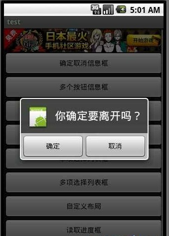

Android软件开发之盘点所有Dialog对话框大合集
今天我用一个Demo 和大家详细介绍一个Android中的对话框的使用技巧。
程序加了个广告 希望在不影响您多少时间的情况下
在模拟器里也好 手机里也好 帮点几下 支持下我
1.确定取消对话框

对话框中有2个按钮 通过调用 setPositiveButton 方法 和 setNegativeButton 方法 可以设置按钮的显示内容以及按钮的监听事件。
我们使用AlerDialog 创建对话框
AlertDialog.Builder builder = new AlertDialog.Builder(MainDialog.this);
使用builder设置对话框的title button icon 等等
builder.setIcon(R.drawable.icon);builder.setTitle("你确定要离开吗？");
builder.setPositiveButton("确定", new DialogInterface.OnClickListener() {
public void onClick(DialogInterface dialog, int whichButton) {
// 这里添加点击确定后的逻辑
showDialog("你选择了确定");
}
});
builder.setNegativeButton("取消", new DialogInterface.OnClickListener() {
public void onClick(DialogInterface dialog, int whichButton) {
// 这里添加点击确定后的逻辑
showDialog("你选择了取消");
}
});
builder.create().show();
这个dialog用于现实onClick后监听的内容信息
private void showDialog(String str) { new AlertDialog.Builder(MainDialog.this).setMessage(str).show();
}
2.多个按钮信息框

AlertDialog.Builder builder = new AlertDialog.Builder(MainDialog.this);builder.setIcon(R.drawable.icon);
builder.setTitle("投票");
builder.setMessage("您认为什么样的内容能吸引您？");
builder.setPositiveButton("有趣味的",
new DialogInterface.OnClickListener() {
public void onClick(DialogInterface dialog, int whichButton) {
showDialog("你选择了有趣味的");
}
});
builder.setNeutralButton("有思想的", new DialogInterface.OnClickListener() {
public void onClick(DialogInterface dialog, int whichButton) {
showDialog("你选择了有思想的");
}
});
builder.setNegativeButton("主题强的",
new DialogInterface.OnClickListener() {
public void onClick(DialogInterface dialog, int whichButton) {
showDialog("你选择了主题强的");
}
});
builder.create().show();
3.列表框


这个数组用于列表选择
final String[] mItems = { "item0", "item1", "itme2", "item3", "itme4", "item5", "item6" };
AlertDialog.Builder builder = new AlertDialog.Builder(MainDialog.this);
builder.setTitle("列表选择框");
builder.setItems(mItems, new DialogInterface.OnClickListener() {
public void onClick(DialogInterface dialog, int which) {
// 点击后弹出窗口选择了第几项
showDialog("你选择的id为" + which + " , " + mItems[which]);
}
});
builder.create().show();
4.单项选择列表框

mSingleChoice 用于记录单选中的ID
int mSingleChoiceID = -1;AlertDialog.Builder builder = new AlertDialog.Builder(MainDialog.this);
mSingleChoiceID = -1;
builder.setIcon(R.drawable.icon);
builder.setTitle("单项选择");
builder.setSingleChoiceItems(mItems, 0,
new DialogInterface.OnClickListener() {
public void onClick(DialogInterface dialog, int whichButton) {
mSingleChoiceID = whichButton;
showDialog("你选择的id为" + whichButton + " ,
+ mItems[whichButton]);
}
});
builder.setPositiveButton("确定", new DialogInterface.OnClickListener() {
public void onClick(DialogInterface dialog, int whichButton) {
if (mSingleChoiceID > 0) {
showDialog("你选择的是" + mSingleChoiceID);
}
}
});
builder.setNegativeButton("取消", new DialogInterface.OnClickListener() {
public void onClick(DialogInterface dialog, int whichButton) {
}
});
builder.create().show();
5.进度条框

点击进度条框按钮后 开启一个线程计算读取的进度 假设读取结束为 100
Progress在小于100的时候一直在线程中做循环++ 只到读取结束后，停止线程。
mProgressDialog = new ProgressDialog(MainDialog.this);mProgressDialog.setIcon(R.drawable.icon);
mProgressDialog.setTitle("进度条窗口");
mProgressDialog.setProgressStyle(ProgressDialog.STYLE_HORIZONTAL);
mProgressDialog.setMax(MAX_PROGRESS);
mProgressDialog.setButton("确定", new DialogInterface.OnClickListener() {
public void onClick(DialogInterface dialog, int whichButton) {
// 这里添加点击后的逻辑
}
});
mProgressDialog.setButton2("取消", new DialogInterface.OnClickListener() {
public void onClick(DialogInterface dialog, int whichButton) {
// 这里添加点击后的逻辑
}
});
mProgressDialog.show();
new Thread(this).start();
public void run() {
int Progress = 0;
while (Progress < MAX_PROGRESS) {
try {
Thread.sleep(100);
Progress++;
mProgressDialog.incrementProgressBy(1);
} catch (InterruptedException e) {
e.printStackTrace();
}
}
}
6.多项选择列表框

MultiChoiceID 用于记录多选选中的id号 存在ArrayList中
选中后 add 进ArrayList
取消选中后 remove 出ArrayList。
ArrayList<Integer> MultiChoiceID = new ArrayList<Integer>();AlertDialog.Builder builder = new AlertDialog.Builder(MainDialog.this);
MultiChoiceID.clear();
builder.setIcon(R.drawable.icon);
builder.setTitle("多项选择");
builder.setMultiChoiceItems(mItems, new boolean[] { false, false,
false, false, false, false, false},
new DialogInterface.OnMultiChoiceClickListener() {
public void onClick(DialogInterface dialog,
int whichButton, boolean isChecked) {
if (isChecked) {
MultiChoiceID.add(whichButton);
showDialog("你选择的id为" + whichButton + " ,
+ mItems[whichButton]);
} else {
MultiChoiceID.remove(whichButton);
}
}
});
builder.setPositiveButton("确定", new DialogInterface.OnClickListener() {
public void onClick(DialogInterface dialog, int whichButton) {
String str = "";
int size = MultiChoiceID.size();
for (int i = 0; i < size; i++) {
str += mItems[MultiChoiceID.get(i)] + ", ";
}
showDialog("你选择的是" + str);
}
});
builder.setNegativeButton("取消", new DialogInterface.OnClickListener() {
public void onClick(DialogInterface dialog, int whichButton) {
}
});
builder.create().show();
7.自定义布局

讲到自定义布局我就得多说一说了，为什么要多说一说呢？
其实自定义布局在Android的开发中非常重要 因为它能让开发者做出自己五彩缤纷的Activity 而不用去使用系统枯燥的界面。
自定义dialog有什么好处？
比如我们在开发过长当中 要通过介绍系统发送的一个广播弹出一个dialog . 但是dialog必需是基于activity才能呈现出来 如果没有activity 的话 程序就会崩溃。所以我们可以写一个自定义的 dialog 把它定义成一个activity
这样我们收到一条打开dialog的广播后 直接启动这个 activity 程序正常运行~~
这就是自定义dialog的好处。
注明：下面这个例子只是写了自定义dialog 没有把它单独的写在一个activity中 如果须要的话 可以自己改一下
AlertDialog.Builder builder = new AlertDialog.Builder(MainDialog.this);LayoutInflater factory = LayoutInflater.from(this);
final View textEntryView = factory.inflate(R.layout.test, null);
builder.setIcon(R.drawable.icon);
builder.setTitle("自定义输入框");
builder.setView(textEntryView);
builder.setPositiveButton("确定", new DialogInterface.OnClickListener() {
public void onClick(DialogInterface dialog, int whichButton) {
EditText userName = (EditText) textEntryView
.findViewById(R.id.etUserName);
EditText password = (EditText) textEntryView
.findViewById(R.id.etPassWord);
showDialog("姓名 ：" + userName.getText().toString() + "密码：
+ password.getText().toString());
}
});
builder.setNegativeButton("取消", new DialogInterface.OnClickListener() {
public void onClick(DialogInterface dialog, int whichButton) {
}
});
builder.create().show();
XML代码如下：
<?xml version="1.0" encoding="utf-8"?><RelativeLayout xmlns:android="http://schemas.android.com/apk/res/android
android:id="@+id/dialog
android:layout_width="wrap_content
android:layout_height="wrap_content
android:orientation="horizontal" >
<LinearLayout
android:id="@+id/dialogname
android:layout_width="wrap_content
android:layout_height="wrap_content
android:orientation="horizontal" >
<TextView
android:id="@+id/tvUserName
android:layout_width="wrap_content
android:layout_height="wrap_content
android:text="姓名：" />
<EditText
android:id="@+id/etUserName
android:layout_width="wrap_content
android:layout_height="wrap_content
android:minWidth="200dip" />
</LinearLayout>
<LinearLayout
android:id="@+id/dialognum
android:layout_width="wrap_content
android:layout_height="wrap_content
android:layout_below="@+id/dialogname
android:orientation="horizontal" >
<TextView
android:id="@+id/tvPassWord
android:layout_width="wrap_content
android:layout_height="wrap_content
android:text="密码：" />
<EditText
android:id="@+id/etPassWord
android:layout_width="wrap_content
android:layout_height="wrap_content
android:minWidth="200dip" />
</LinearLayout>
</RelativeLayout>
8.读取进度框

显示一个正在转圈的进度条loading
mProgressDialog = new ProgressDialog(this);mProgressDialog.setTitle("读取ing");
mProgressDialog.setMessage("正在读取中请稍候");
mProgressDialog.setIndeterminate(true);
mProgressDialog.setCancelable(true);
mProgressDialog.show();